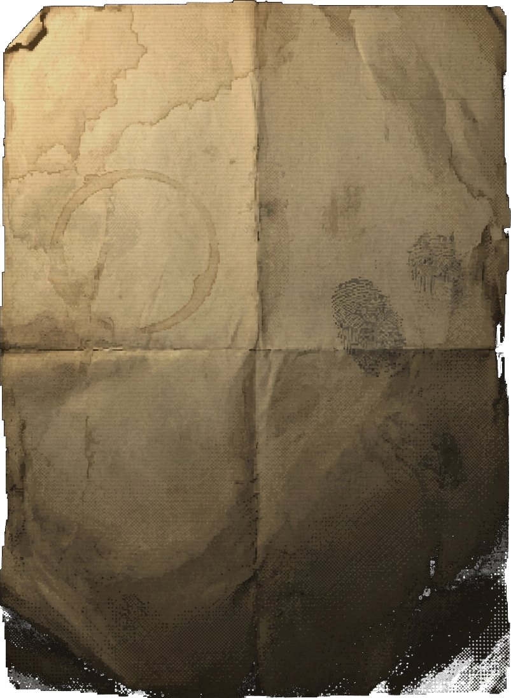
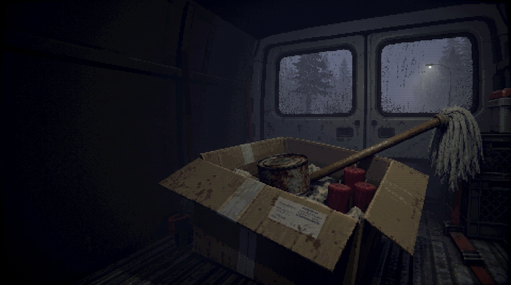
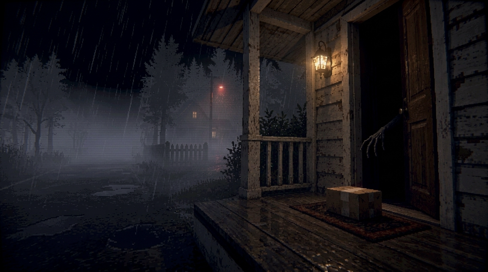
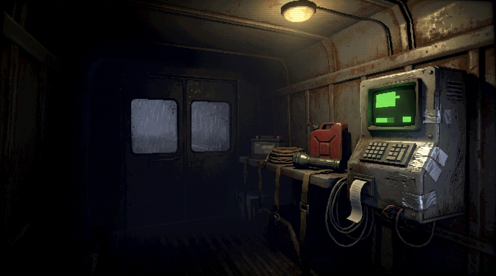

Это кооперативный атмосферный хоррор о ночных курьерах.
Вы получаете странные заказы, ищете предметы в бесконечном процедурно генерируемом мире и доставляете загадочному адресату.
То, что начинается как рутина, с каждым рейсом всё сильнее нарушает привычную реальность.
Играйте соло или большой компанией. Распределяйте ответсвенность и решайте трудности, возникающие перед вами.
Мир не заканчивается за горизонтом. Исследуйте незнакомые места, находите свой путь и никогда не знайте наверняка, что ждёт за следующим поворотом.
Мобильная база, общий склад находок и единственное укрытие среди ночи. Покидайте его, но не теряйте из виду.
Страх нарастает с каждым рейсом. Странные звуки, необъяснимые события. Тот, кто ждёт посылку, кажется, знает о вас слишком много.
Обыскивайте мотели, заброшенные склады и обочины, чтобы собрать нужные предметы.
Каждый рейс - это новая вылазка в ночную глушь.
Дороги ведут через незнакомые места, а привычные маршруты не всегда остаются прежними. Вас ждут неожиданные находки, странности и головоломки, которые потребуют нестандартных решений.
Держитесь вместе, помогайте друг другу и не забывайте о том, что иногда опасность едет с вами в одной машине.
ПОЛУЧЕНИЕ НАКЛАДНОЙ
Каждый рейс начинается с курьерского терминала. Вместо готовой посылки вы получаете список разрозненных предметов и особые указания заказчика.

- Бутылка масла
- Старая деревянная швабра
- Три красные восковые свечи
Оставьте вещи строго на нижней ступени крыльца. В окна второго этажа ни при каких обстоятельствах не смотреть.
ПОИСК ПРЕДМЕТОВ
Вы покидаете фургон и исследуете ночные локации. В темноте путь освещают фары фургона и свет карманного фонарика. Иногда то, что долго не удавалось найти, необъяснимым образом оказывается прямо у вас под ногами.
ПОГРУЗКА В ФУРГОН
Фургон - ваш общий склад на колёсах и средство передвижения. Найденные предметы нужно погрузить в кузов и упаковать согласно заказу. Тяжёлые ящики придётся переносить вдвоём, а при резком торможении груз может повредиться.

ДОСТАВКА ДО ДВЕРИ
Доберитесь до указанного адреса, следуя маршруту из курьерского навигатора. Оставьте собранную посылку у двери. И всегда помните главное правило курьерской службы - выполнить условия заказа.

НАГРАДА И УЛУЧШЕНИЯ
За выполненный заказ вы получаете награду в ячейке постамата — там же, где вас ждёт следующая накладная. Тратьте заработанное через бортовой терминал фургона, покупайте новое снаряжение и улучшайте машину, чтобы каждый следующий рейс проходил чуть более комфортно.

Мир вокруг вас постоянно меняется.
Пока вы путешествуете, одни места исчезают за спиной, а впереди всегда найдётся дорога, по которой вы ещё не ездили.
Сейчас мы планируем создать одиночный прототип игры, чтобы передать её атмосферу и показать геймплей.
Многие игровые механики ещё обсуждаются, поэтому именно сейчас ваше мнение может повлиять на то, какой станет игра в итоге.
Расскажите, что зацепило, что смутило и чего вы ждёте от игры.